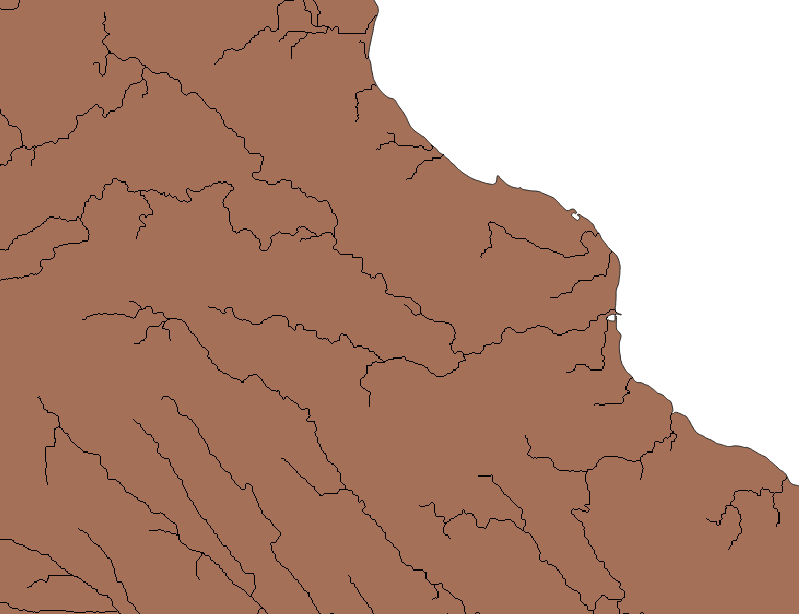

2. Digital Elevation Preprocessing#
In this notebook, we’ll merge the raster tiles and clip them to the Vancouver Island polygon. We’ll then process the DEM using Whitebox library to generate a stream network. We need the stream network to generate pour points which are ultimately used for basin delineation. If you are familiar with ArcGIS or QGIS, you can do the DEM processing using those tools if you prefer. Ultimately we need a flow direction (d8) raster and a stream network raster for the next steps.
import os
import rioxarray as rxr
from utilities import *
base_dir = os.path.dirname(os.getcwd())
dem_dir = os.path.join(base_dir, 'notebooks/data/DEM/')
dem_files = [e for e in os.listdir(dem_dir) if e.endswith('.tif')]
# open a sample dem file and get the resolution and CRS
dem_fpath = os.path.join(dem_dir, dem_files[0])
dem, crs, affine = retrieve_raster(dem_fpath)
dem_resolution = dem.rio.resolution()
dx, dy = int(abs(dem_resolution[0])), int(abs(dem_resolution[1]))
print(f'DEM is {dx}x{dy}m resolution and is in EPSG {crs} CRS')
Clip the DEM#
Let’s take the polygon describing Vancouver Island and use it to clip the DEM. We do this so we don’t end up computing the stream network on the ocean surrounding the island, and so that we can identify where rivers drain into the ocean.
import geopandas as gpd
mask_path = os.path.join(base_dir, 'notebooks/data/region_polygons/Vancouver_Island.geojson')
output_dem_path = os.path.join(base_dir, f'notebooks/data/DEM/Vancouver_Island_{crs}.tif')
vrt_path = os.path.join(base_dir, 'notebooks/data/DEM/USGS_3DEP_mosaic_4269.vrt')
mask = gpd.read_file(mask_path)
gtype = mask.geometry.values[0].geom_type
if mask.geometry.is_valid.values[0]:
print(f' ...mask is valid.')
output_dem_path
The command below takes the Vancouver Island shoreline polygon and uses it to clip the virtual raster. The function should take about a minute or so depending upon your system hardware. Note the resulting file is roughly 1GB, and for the various DEM processing steps you may need up to 1X that in RAM.
command = f'gdalwarp -s_srs epsg:{crs} -cutline {mask_path} -cl Vancouver_Island -crop_to_cutline -multi -of gtiff {vrt_path} {output_dem_path} -wo NUM_THREADS=ALL_CPUS'
if not os.path.exists(output_dem_path):
os.system(command)
Since we will be working with areas and distances, we want the dem in a projected CRS that is representative of the specific location. Here we use BC Albers (EPSG 3005). Let’s reproject the DEM.
# check # pixels low res
new_crs = 3005
dem_path_reprojected = output_dem_path.replace(f'_{crs}.tif', f'_{new_crs}.tif')
if not os.path.exists(dem_path_reprojected):
# reproject to epsg 3005
lr = rxr.open_rasterio(output_dem_path, masked=True, default='dem')
lr = lr.rio.reproject(new_crs)
lr.rio.to_raster(dem_path_reprojected)
lr_shape = lr.rio.shape
dem_resolution = lr.rio.resolution()
n_pix = lr_shape[0] * lr_shape[0]
print(f' ...img has {n_pix:.2e} pixels')
else:
fname = dem_path_reprojected.split('/')[-1]
print(f' ...{fname} exists, skipping dem reprojection..')
The command below will try to plot the raster, it should look like the image below.
{kind=link}
Fig. 2 The elevation of Vancouver Island represented in colour.#
Note
It may take some time to load as the raster is about 200 million pixels.
Feel free to skip past the next cell and go to the Whitebox import.
import rasterio
from rasterio.plot import show
show(rasterio.open(output_dem_path))
Hydraulic Conditioning#
The DEM in its unprocessed form will have “pits” or local depressions that will prevent the stream networks from resolving.
We need to run several steps using the Whitebox library:
fill depressions: creates a new DEM raster where pits are filled (Whitebox fill depressions)
d8 flow direction: creates a new raster where the values represent the direction of surface flow based on each pixel’s lowest neighbour.(Whitebox d8 pointer)
flow accumulation: creates a new raster representing the number of cells upstream of each pixel. (Whitebox d8 flow accumulation)
stream network: creates a new raster where the streams are represented by 1 and hillslopes are represented by 0. Here we need to set a threshold for the accumulation that yields a stream. We use a threshold of 1 \(km^2\) but in reality this depends upon several factors and varies in time and space. (Whitebox extract streams)
If you have issues, check out the tutorial from Google Colab on whitebox.
import whitebox
wbt = whitebox.WhiteboxTools()
# change to True to see more detailed logs
wbt.verbose = False
Note that to run functions using the whitebox library, we need to provide absolute urls, i.e. the full file path (/home/danbot/Documents/code/23/bcub/content/data/DEM/...) as opposed to the relative filepath (data/DEM/...).
filled_dem_path = os.path.join(dem_dir, dem_path_reprojected.replace('.tif', '_filled.tif'))
if not os.path.exists(filled_dem_path):
wbt.fill_depressions(
dem_path_reprojected,
filled_dem_path,
fix_flats=True,
flat_increment=None,
max_depth=None,
callback=None,
)
Flow Direction, Accumulation, and Stream Network#
# d8 pointer
d8_pointer_path = os.path.join(dem_dir, 'Vancouver_Island_d8_pointer.tif')
if not os.path.exists(d8_pointer_path):
wbt.d8_pointer(
filled_dem_path,
d8_pointer_path,
esri_pntr=False,
callback=None
)
# flow accumulation
acc_path = os.path.join(dem_dir, 'Vancouver_Island_acc.tif')
wbt.d8_flow_accumulation(
filled_dem_path,
acc_path,
out_type="cells",
log=False,
clip=False,
pntr=False,
esri_pntr=False,
callback=None
)
Before extracting streams, lets calculate the number of pixels representing 1 \(km^2\) at the resolution of the DEM.
Make sure you are looking at the projected dem, otherwise you will be measuring resolution in decimal degrees. We want the threshold expressed as number of cells/pixels, It should be just over 2000.
dx, dy = dem_resolution
print(f'raster resolution is {abs(dx):.0f}x{abs(dy):.0f} m')
threshold = int(1E6 / (abs(dx) * abs(dy))) # 1E6 m^2 = 1 km^2
threshold
# extract streams
streams_path = os.path.join(dem_dir, 'Vancouver_Island_streams.tif')
wbt.extract_streams(
acc_path,
streams_path,
threshold,
zero_background=False,
callback=None
)
The final product should now have resolved stream networks, see the example detail below. Generally if streams do not resolve, there is an issue with the flow direction raster, i.e. check that the flow direction was created from a filled DEM.

Warning
River networks derived from digital elevation data are mostly representative, but they are far from perfect. The figure below is one example of where the stream network as derived from the USGS 3DEP DEM diverges from the watercourse polygon defined in the National Hydrographic Network. We’ll use the NHN data to filter pour points in the next notebook.
{kind=link}
Fig. 3 The black squares represent the stream network that will be derived in the next chapter, while the light blue polygon represents a watercourse layer polygon from the National Hydrographic Network dataset.#